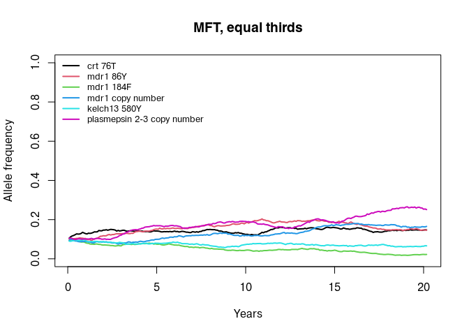
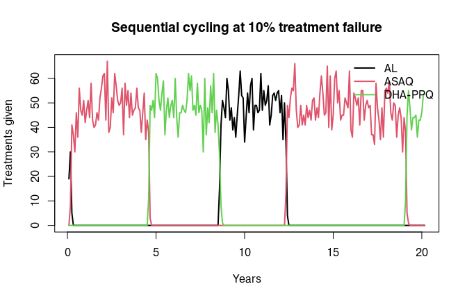
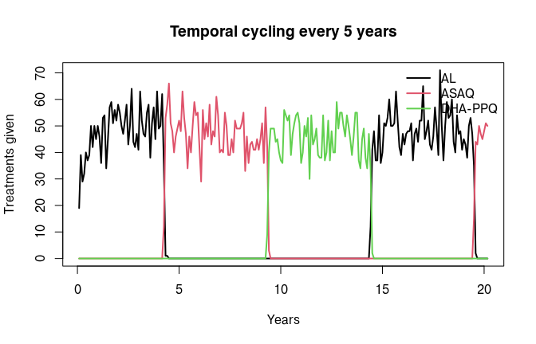
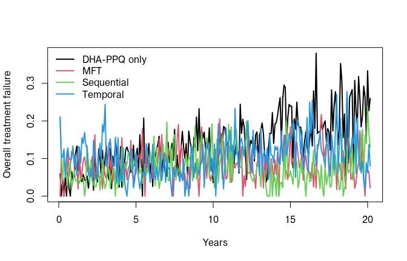
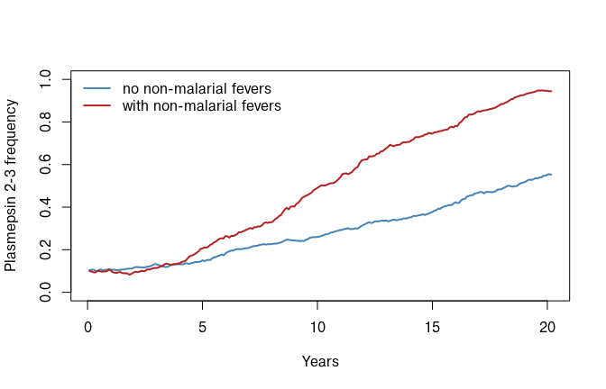

vignettes/DrugStrategies.Rmd
DrugStrategies.RmdThe resistance vignette deploys a
single drug and watches resistance to it spread. In practice a programme
has choices: which drug to use first, whether to use several at once,
and when to change. magenta can represent three strategies,
all configured through drug_list_create():
This vignette also covers non-malarial fevers, which change how much drug pressure a population experiences without changing the treatment policy at all.
drugs takes a list, and number_of_drugs has
to match its length. Drugs are referred to by zero
indexed position, so drug_choice = 0 is the first
drug in the list.
drugs <- list(
magenta:::drug_create_al(),
magenta:::drug_create_asaq(),
magenta:::drug_create_dhappq()
)
drug_names <- c("AL", "ASAQ", "DHA-PPQ")Throughout this vignette we reuse a helper so that the only thing changing between runs is the strategy:
loci <- c("crt 76T", "mdr1 86Y", "mdr1 184F", "mdr1 copy number",
"kelch13 580Y", "plasmepsin 2-3 copy number")
strategy_list <- function(...) {
drug_list_create(
resistance_flag = TRUE,
number_of_resistance_loci = 6,
artemisinin_loci = 4,
cost_of_resistance = rep(1, 6),
drugs = drugs,
number_of_drugs = 3,
...
)
}
run_strategy <- function(drug_list, years = 20, seed = 1L) {
pipeline(EIR = 10, N = 3000, years = years, ft = 0.4,
num_loci = 6, plaf = rep(0.1, 6),
update_length = 30, update_save = TRUE,
human_update_save = TRUE, summary_saves_only = TRUE,
genetics_df_without_summarising = TRUE,
drug_list = drug_list, seed = seed)
}
# saved intervals, dropping the final element which is the simulation itself
saved <- function(out) out[seq_len(length(out) - 1)]
af_over_time <- function(out) {
af <- do.call(rbind, lapply(saved(out), "[[", "af"))
colnames(af) <- loci
af
}
tf_over_time <- function(out) {
unlist(lapply(saved(out), "[[", "overall_treatment_failure"))
}
# treatments given with each drug, per saved interval
usage_over_time <- function(out) {
use <- do.call(rbind, lapply(saved(out), function(x) {
x$succesfull_treatments + x$unsuccesful_treatments_lpf
}))
colnames(use) <- drug_names
use
}With mft_flag = TRUE, each treated individual is given a
drug drawn at random according to partner_drug_ratios.
Those ratios are the proportion of treatments that use each drug, and
must be the same length as drugs.
out_mft <- run_strategy(
strategy_list(mft_flag = TRUE, partner_drug_ratios = c(1/3, 1/3, 1/3))
)
## Seed set to 1
## magenta v1.3.8
## Starting Stochastic Simulation for 20 years
head(round(usage_over_time(out_mft), 1), 4)
## AL ASAQ DHA-PPQ
## [1,] 12 1 2
## [2,] 11 9 10
## [3,] 20 9 13
## [4,] 15 17 13All three drugs are in use at once, in roughly the requested
proportions. An unequal split is simply a different set of ratios, for
example partner_drug_ratios = c(0.5, 0.3, 0.2).
Because each drug selects on a different set of loci, MFT spreads the selective pressure out:
plot_af <- function(af, main = "", legend_pos = "topleft") {
years <- seq_len(nrow(af)) / 12
matplot(years, af, type = "l", lty = 1, lwd = 2, ylim = c(0, 1),
col = seq_len(ncol(af)), xlab = "Years", ylab = "Allele frequency",
main = main)
legend(legend_pos, legend = colnames(af), col = seq_len(ncol(af)),
lty = 1, lwd = 2, bty = "n", cex = 0.8)
}
plot_af(af_over_time(out_mft), main = "MFT, equal thirds")
Note that an individual’s drug is cached for 15 days, so someone retreated shortly after a failure receives the same drug rather than a fresh draw.
With sequential_cycling set to a proportion, the model
watches overall_treatment_failure and moves to the next
drug in the list once that threshold is exceeded.
sequential_update is the minimum number of years between
switches, which stops a noisy failure estimate causing repeated
changes.
out_seq <- run_strategy(
strategy_list(mft_flag = FALSE,
partner_drug_ratios = c(1, 0, 0),
drug_choice = 0,
sequential_cycling = 0.10,
sequential_update = 3)
)
## Seed set to 1
## magenta v1.3.8
## Starting Stochastic Simulation for 20 years
## Sequential cycling: switched to drug 1
## Sequential cycling: switched to drug 2
## Sequential cycling: switched to drug 0
## Sequential cycling: switched to drug 1
## Sequential cycling: switched to drug 2The messages record each switch. Plotting which drug is actually being used makes the policy visible:
plot_usage <- function(out, main = "") {
use <- usage_over_time(out)
years <- seq_len(nrow(use)) / 12
matplot(years, use, type = "l", lty = 1, lwd = 2, col = seq_len(ncol(use)),
xlab = "Years", ylab = "Treatments given", main = main)
legend("topright", legend = colnames(use), col = seq_len(ncol(use)),
lty = 1, lwd = 2, bty = "n")
}
plot_usage(out_seq, main = "Sequential cycling at 10% treatment failure")
Three things about sequential cycling are easy to trip over.
pipeline(). It therefore only
happens when update_save = TRUE.resistance_flag is
TRUE for that year. If you stage resistance so that it is
inactive during a burn-in, cycling is inactive then too.mft_flag = TRUE. MFT and
cycling are alternatives, not features that combine.The drug index wraps around, so after the last drug the policy returns to the first.
temporal_cycling switches drug every fixed number of
years, whatever the failure rate is doing. It cannot be combined with
sequential_cycling; drug_list_create() will
stop if both are positive.
out_temporal <- run_strategy(
strategy_list(mft_flag = FALSE,
partner_drug_ratios = c(1, 0, 0),
drug_choice = 0,
temporal_cycling = 5)
)
## Seed set to 1
## magenta v1.3.8
## Starting Stochastic Simulation for 20 years
plot_usage(out_temporal, main = "Temporal cycling every 5 years")
Putting the three side by side on the same seed is the usual starting point for a policy comparison. Here we hold everything else fixed and compare overall treatment failure:
out_single <- run_strategy(
strategy_list(mft_flag = FALSE, partner_drug_ratios = c(0, 0, 1),
drug_choice = 2)
)
## Seed set to 1
## magenta v1.3.8
## Starting Stochastic Simulation for 20 years
tfs <- cbind(
"DHA-PPQ only" = tf_over_time(out_single),
"MFT" = tf_over_time(out_mft),
"Sequential" = tf_over_time(out_seq),
"Temporal" = tf_over_time(out_temporal)
)
years <- seq_len(nrow(tfs)) / 12
matplot(years, tfs, type = "l", lty = 1, lwd = 2, col = seq_len(ncol(tfs)),
xlab = "Years", ylab = "Overall treatment failure")
legend("topleft", legend = colnames(tfs), col = seq_len(ncol(tfs)),
lty = 1, lwd = 2, bty = "n")
A single run of a stochastic model is not a result. For anything you intend to report, run many seeds per strategy and summarise the distribution; the differences between strategies here are comparable in size to the variation between seeds.
Treatment coverage ft applies to clinical malaria. But
in a real health system, people are also treated for fevers that are not
malaria, either because no test was done or because a test was wrong.
Those treatments still expose parasites to the drug, and still put
uninfected people into a prophylactic state.
nmf_list_create() controls this. Like the drug
constructors, it is currently an internal function and so is called with
magenta:::, even though pipeline() documents
it as the way to configure non-malarial fevers:
nmf <- magenta:::nmf_list_create(nmf_flag = TRUE, prob_of_testing_nmf = 0.5)
str(nmf[c("nmf_flag", "prob_of_testing_nmf")])
## List of 2
## $ nmf_flag : logi TRUE
## $ prob_of_testing_nmf: num 0.5mean_nmf_frequency is the mean number of days between
non-malarial fevers, one value per age bracket, and
nmf_age_brackets gives those brackets in days. The defaults
are age specific and based on observed fever frequencies.prob_of_testing_nmf is the probability that a
non-malarial fever is tested before antimalarials are given. Lowering it
increases presumptive treatment.Adding non-malarial fevers increases the amount of drug in
circulation without changing ft:
out_nmf <- pipeline(
EIR = 10, N = 3000, years = 20, ft = 0.4,
num_loci = 6, plaf = rep(0.1, 6),
update_length = 30, update_save = TRUE,
human_update_save = TRUE, summary_saves_only = TRUE,
genetics_df_without_summarising = TRUE,
drug_list = strategy_list(mft_flag = FALSE,
partner_drug_ratios = c(0, 0, 1),
drug_choice = 2),
nmf_list = nmf,
seed = 1L
)
## Seed set to 1
## magenta v1.3.8
## Starting Stochastic Simulation for 20 years
ppq <- "plasmepsin 2-3 copy number"
years <- seq_len(nrow(af_over_time(out_single))) / 12
plot(years, af_over_time(out_single)[, ppq], type = "l", lwd = 2,
col = "steelblue", ylim = c(0, 1),
xlab = "Years", ylab = "Plasmepsin 2-3 frequency")
lines(years, af_over_time(out_nmf)[, ppq], lwd = 2, col = "firebrick")
legend("topleft", legend = c("no non-malarial fevers", "with non-malarial fevers"),
col = c("steelblue", "firebrick"), lwd = 2, bty = "n")
Whether this speeds resistance up or slows it down is not obvious in advance. Extra treatment selects for resistance, but it also removes infections and lengthens the population’s time under prophylaxis, which reduces transmission. That trade-off is one of the more interesting things the model can be used to examine.
Two further mechanisms change what resistance does, beyond the probability of being cured.
Slow parasite clearance. If treatment succeeds but
the individual is carrying a strain resistant at any of the treating
drug’s barcode_positions, they remain in the treated state
for an extra dur_SPC days before moving to prophylaxis, and
keep only the resistant strains. This represents delayed clearance, and
gives resistant parasites a longer window in which to be transmitted.
Note that this is driven by the drug’s own resistance positions, not by
artemisinin_loci.
Gametocyte and oocyst effects.
vector_adaptation_list_create() holds
gametocyte_sterilisation_flag,
gametocyte_sterilisation and
oocyst_reduction_by_artemisinin, which modify how well a
recently treated host infects mosquitoes. These are off by default. They
are the natural place to represent a transmission blocking drug, and are
discussed in detail in the adding a new drug
vignette, which also notes a discrepancy between the intent and the
implementation that you should be aware of before using them.